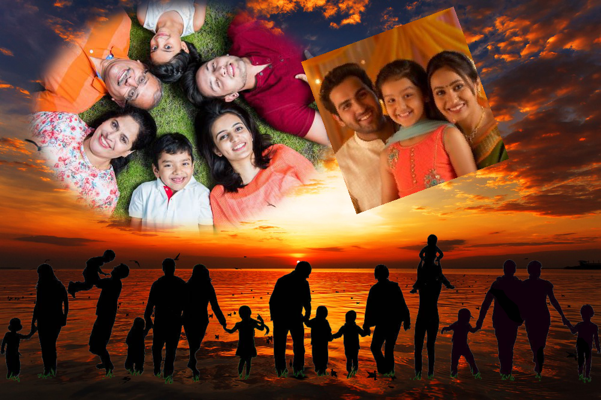

Projects
Photo Manipulation Project

Project:Python Photo Manipulation Project
For this project, we were given a client with lots of family images trying to create a collage with the requirements of using geometrical shapes and a silhouette to represent the family as a whole.Me and a partner worked on creating masks, a way to crop the images. We created 2 masks, that can be altered dimensions to create other shapes. One was an ellipse, and the other was a square that was rotated. We placed these over the images, and got rid of anything that did not fit in the frame. We also decided that we should use a background image to enhance the overall aesthetic. We used this project to learn more about file manipulations and the meticulous details that really made this project difficult.
Etch-a-sketch Game
Press Run to play.
Project:Sketch-a-etch
For an activity to discover the purposes of python and turtle, I created an sketch-a-etch game. I was given no instructions and had to learn how to use python to create a user-friendly game. I thought of using to learn turtle and to create a etch-a-sketch game. This is targeted toward younger audiences, as the game can be made into a snake and apple game or any other type of game.The features in this game cna be changed to create a game that people can enjoy and have fun with in general.While doing this project I faced difficulties with how turtle moves with angles and move increments.I worked on this project with a group of fourth graders and demonstrated to them how turtle works.